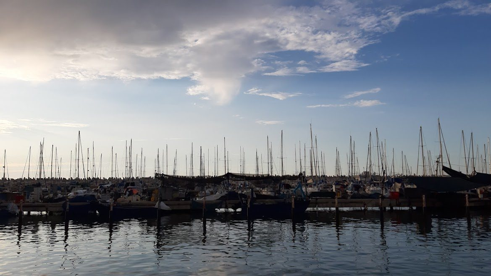

מרינה אשקלון · מתוך השידור "מישור החוף המרכזי והדרומי", מערכת השידורים הלאומיתמאפיינים ושיווק · נושא 5
התייר לא קונה שירות אחד. הוא צריך לינה, טיסה, אוטובוס, ארוחות, אטרקציות ומדריך, וכולם צריכים להתחבר לחופשה אחת. איכות החופשה תלויה בתיאום ביניהם.
הרעיון המאחד
אם חוליה אחת נכשלת, למשל אוטובוס מאחר או חדר לא מוכן, כל החופשה נפגעת. לכן מארגן התיירות מתאם בין הספקים, ובונה מהם מוצר אחד.
שירותי אכסון
| סוג | למי ואיפה |
|---|---|
| מלון מסחרי | אנשי עסקים, במרכז העיר |
| מלון נופש | באזור נופש, עם בריכה, ספורט ובידור |
| מלון כנסים | גדול, עם אולמות וציוד |
| הוספיס | אכסניה צנועה לצליינים, לפעמים ליד מנזר |
| אכסניית נוער | צעירים ותקציב נמוך, חדרים משותפים |
| בית הארחה | שקט ומנוחה, למשל בקיבוץ |
| צימר | אירוח כפרי, לפעמים בישול עצמי |
| חניון קמפינג | אוהלים וקרוואנים, שירותים בסיסיים |
בשנת 2000 היו בישראל כ־45,000 חדרי מלון. כמחצית בירושלים ובמרכז, ויותר מרבע באילת ובטבריה. צימרים בגליל, בגולן ובעמקים. אכסניות נוצריות בירושלים, בנצרת ובכינרת.
סוג האכסון ופריסתו מתאימים לאופי התיירות באזור: צליינים בירושלים, נופשים באילת, משפחות בצימרים בצפון.
רשתות: בינלאומיות (הילטון, שרתון, הייאט) וישראליות (דן, ישרוטל).
מאחורי הקלעיםהרחבה
אלה מושגים מרשימת 2024. הם לא ברשימת 2026, ולא נשאלו בבגרויות 2018–2026.
תחבורה אווירית
כ־90% מהתיירות הבינלאומית מגיעה במטוס (לפי הספר). לישראל כמעט כל התיירים מגיעים באוויר, ולכן מדיניות התעופה קריטית.
לפי לוח זמנים קבוע, שלא תלוי במספר הנוסעים. יקרה יחסית. כך טסים רוב אנשי העסקים.
חברת תיירות שוכרת מטוס לתקופה מסוימת, ומוכרת את המושבים בחבילות. זולה יותר, בלי לוח זמנים קבוע, ליעדים קרובים.
יתרון: מחיר נמוך, וטיסות ישירות מערים קטנות. חיסרון למארגן: הוא התחייב לשלם, ומפסיד על מושבים שלא נמכרו.
נתב"ג: כ־40,000 נוסעים ב־1948, יותר מ־9 מיליון ב־2000. טרמינל 3 נפתח ב־2004.
כבר נלמד:הנגב 4 · צ'רטרים לאילתהנגב 5 · שמיים פתוחים, מוגבלים ו־Code Sharing
תחבורה ביבשה ובים
שיט בכינרת מטבריה, שיט וצלילה באילת, ואוניות נוסעים לנמלי חיפה ואשדוד. התחבורה הימית יכולה להיות מוצר תיירותי בעצמה.
שיט חופים: האונייה היא "מלון צף" שעוגן בנמלים. הנוסעים לא לנים ביבשה, ולכן הם מבקרי יום. מנמל חיפה יוצאים לעכו, לנצרת ולכינרת. מנמל אשדוד לירושלים, לבית לחם ולים המלח.
מושגים 11–12 ושאלות 2018, 2024 נלמדו:מישור החוף 4 · שיט חופים ונוסע בשיוט
מעברי גבול · בגרות 2019
לפי הספר, יותר ממחצית התיירים שהגיעו ביבשה הגיעו מירדן. מעברי הגבול מאפשרים גם חבילות חוצות גבולות, למשל אילת ופטרה.
| בדרום | לאן |
|---|---|
| מעבר יצחק רבין (ערבה) | ירדן, ליד אילת |
| מעבר טאבה | מצרים, סיני |
| בצפון ובמזרח | לאן |
|---|---|
| מעבר נהר הירדן (שייח' חוסיין) | ירדן, ליד בית שאן |
| קוניטרה | סוריה, ברמת הגולן |
| ראש הנקרה | לבנון |
המחוון של 2019 קיבל את כל המעברים האלה. בפועל, היום עוברים תיירים רק לירדן ולמצרים.
מעברי הדרום נלמדו:הנגב 5 · מעברי הגבול וטיולים חוצי גבולות
שירותי הסעדה
| בסיס אירוח | מה כלול | מי מעדיף (לפי הספר) |
|---|---|---|
| Room Only | לינה בלבד | אמריקנים |
| Bed & Breakfast | לינה וארוחת בוקר | אירופים |
| Half Board · חצי פנסיון | בוקר וארוחה עיקרית | אירופים |
| Full Board · פנסיון מלא | שלוש ארוחות | קבוצות מצרפת ואיטליה, סיורי תמריץ |
פנאי ובילוי
| אטרקציה טבעית | אטרקציה מלאכותית | |
|---|---|---|
| מקור | תהליכי טבע | מעשה ידי אדם |
| דוגמאות | המנסרה (הנגרייה) במכתש, מערת הקמח, מפלי הניאגרה | מוזיאונים, פארקים, קניונים, אירועים |
| אפשר ליצור? | לא. אפשר רק לפתח גישה ושירותים | כן. מתכננים ובונים |
| מי מפתח | בעיקר המדינה (גנים לאומיים ושמורות) | לרוב יוזמה מקומית או פרטית |
כדי שאטרקציה תהיה מוצר תיירותי, צריך גם נגישות, שירותים ותחזוקה.
שירותי תיור
| סיור רגולרי | רכב אשכול | |
|---|---|---|
| אופי | קבוצתי | פרטי |
| מסלול | קבוע | מותאם לתייר |
| יציאה | ימים קבועים | בתיאום |
| מחיר | נמוך | גבוה |
| מתאים ל | תייר עצמאי עם מעט זמן | אנשי עסקים, אורחים חשובים, משפחה |
רכב אשכול: הנהג הוא גם מורה הדרך. על הרכב יש סמל של אשכול ענבים.
חיסרון של סיור רגולרי: לא גמיש, זמן מוגבל בכל אתר, ואין סיורים לכל יעד.
חבילה שמרכיבים מראש ומוכרים לפי תוכנית, למשל חבילת ארקיע לאילת: טיסה, העברות ומלון. יתרון: ניצול שירותים קיימים וחיסכון. חיסרון: לא מותאם אישית.
בגרות 2019 · מושג 2025
סחר מקוון הוא מסחר בערוצים אלקטרוניים, כמו האינטרנט והדוא"ל, שמאפשר לקנות, להזמין ולתכנן רכישה של מוצרים ושירותים.לא במיקוד 2026
שירות תיירות הוא מוצר לא מוחשי: אי אפשר להציג אותו פיזית בזמן הקנייה. באינטרנט אפשר לראות תמונות וסרטונים, להשוות מחירים ולקרוא המלצות, ולקנות מתי שרוצים.
נלמד על מוצר לא מוחשי בנושא 6, ועל שיווק באינטרנט בנושא 10.
תרגול מהיר · בסטודיו
שאלה פתוחה ומושגים · עונים בסטודיו
שאלות בעקבות הספר · עונים בסטודיו
שאלות בעקבות הספר · עונים בסטודיו
סיכום
בנושא הבא: המוצר התיירותי.